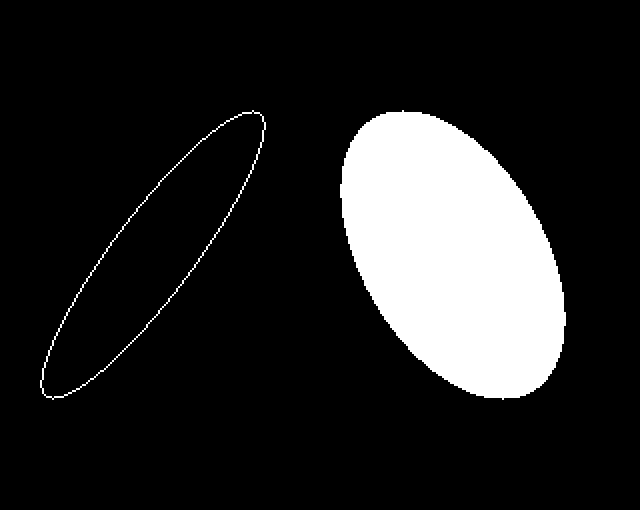

Outline; Filled - 998 bytes (6%)
- §1. Ellipse, outline and filled
- §2. plotEllipseOutline
- §3. Plot a filled ellipse
- §4. Handles the special case of a zero height ellipse
- §5. Ellipse initialisation
- §6. updateEllipseIncrementally
- §7. Update the current position to the next pixel around the ellipse
- §8. Draws one point of an outline ellipse, and also its reflection
- §9. Fills one row of a filled ellipse, and also its reflection
§1. Ellipse, outline and filled.

.plotEllipseOutline = $b9ea JSR .ellipseInitialisation JMP .startEllipseOutline .ellipseOutlineLoop = $b9f0 JSR .updateEllipseIncrementally move to next pixel around ellipse .startEllipseOutline = $b9f3 sort coordinates to find the rightmost one LDX #.ellipsePointCLow - .vduVariablesStart LDY #.ellipsePointALow - .vduVariablesStart JSR .sortCoordinatesXYByColumn Y is the rightmost point of .ellipsePointC and .ellipsePointA LDX #.ellipseLeftPointLow - .vduVariablesStart [NOTE: Redundant, as we load X again below] plot row of pixels from left point .ellipseLeftPoint to rightmost point vdu[Y,Y+1] LDA .ellipseLeftPointHigh STA .ellipseCurrentOffsetXHigh LDX .ellipseLeftPointLow .ellipseOutlineContinueRowLoop = $ba05 STX .ellipseCurrentOffsetXLow JSR .outlineEllipsePlotOnePointAndReflection Increment (X,.ellipseCurrentOffsetXHigh) INX BNE + INC .ellipseCurrentOffsetXHigh + If (X,.ellipseCurrentOffsetXHigh) has NOT reached the rightmost point of the row, then branch back TXA } CMP .vduVariablesStart,Y } LDA .ellipseCurrentOffsetXHigh } compare } (X,ellipseCurrentOffsetXHigh) with } rightmost point on row SBC .vduVariablesStart+1,Y } BMI .ellipseOutlineContinueRowLoop move back one pixel left LDY .ellipseCurrentOffsetXHigh TXA } BNE + } DEY } XY-- + } DEX } store rightmost pixel on row STX .ellipsePointCLow STY .ellipsePointCHigh Compare XY against .ellipseRightPoint TXA } CMP .ellipseRightPointLow } TYA } if (XY >= .ellipseRightPoint) then } branch forward SBC .ellipseRightPointHigh } BPL .ellipseOutlineCheckIfDone } Sort three values left to right LDX #.ellipsePointDLow - .vduVariablesStart LDY #.ellipsePointBLow - .vduVariablesStart JSR .sortCoordinatesXYByColumn LDY #.ellipsePointCLow - .vduVariablesStart JSR .sortCoordinatesXYByColumn Y is the rightmost point of .ellipsePointB, .ellipsePointD, and .ellipsePointC plot row of pixels from rightmost point .ellipseRightPoint to leftmost point vdu[Y,Y+1] (X,.ellipseCurrentOffsetXHigh) = .ellipseRightPoint LDA .ellipseRightPointHigh STA .ellipseCurrentOffsetXHigh LDA .ellipseRightPointLow TAX .ellipseOutlineContinueRowLoop2 = $ba4b STX .ellipseCurrentOffsetXLow JSR .outlineEllipsePlotOnePointAndReflection Decrement (X,.ellipseCurrentOffsetXHigh) TXA BNE + DEC .ellipseCurrentOffsetXHigh + DEX If (X,.ellipseCurrentOffsetXHigh) has NOT reached the rightmost point of the row, then branch back CLC TXA SBC .vduVariablesStart,Y LDA .ellipseCurrentOffsetXHigh SBC .vduVariablesStart+1,Y BPL .ellipseOutlineContinueRowLoop2 .ellipseOutlineCheckIfDone = $ba65 LDA .ellipseHalfHeightCounterHigh BPL .ellipseOutlineLoop if (not finished) then branch back JMP .finishEllipseLastRow
.plotEllipseFilled = $ba6d JSR .ellipseInitialisation JMP .startFilledEllipse .filledEllipseLoop = $ba73 JSR .updateEllipseIncrementally move to next row .startFilledEllipse = $ba76 LDX #.ellipseRightPointLow - .vduVariablesStart LDY #.ellipseLeftPointLow - .vduVariablesStart JSR .fillEllipseOneRowAndReflection LDA .ellipseHalfHeightCounterHigh BPL .filledEllipseLoop .finishEllipseLastRow = $ba82 Increment height counter INC .ellipseCountHeightLow BNE + INC .ellipseCountHeightHigh + Plot final row LDX #.ellipsePointBLow - .vduVariablesStart LDY #.ellipsePointALow - .vduVariablesStart JSR .fillEllipseOneRowAndReflection JMP .setGraphicsCursorPositionAndFinishPLOT
§4. Handles the special case of a zero height ellipse.
Draws a single row
.zeroHeightEllipse = $ba94 PLA take values off call stack to PLA end the ellipse routine early Plot one row LDA #0 STA .ellipseCountHeightLow STA .ellipseCountHeightHigh LDX #.ellipse256AspectRatioMid - .vduVariablesStart LDY #.ellipsePointELow - .vduVariablesStart where to put results JSR .negateVDUVariableXIntoY .ellipsePointE = -.ellipse256AspectRatioMid/High LDX #.ellipse256AspectRatioMid - .vduVariablesStart LDY #.vduWorkspaceCC - .vduVariablesStart where to put results JSR .copyTwoBytesWithinVDUVariables .vduWorkspaceCC/DD = .ellipse256AspectRatioMid/High LDX #.vduWorkspaceCC - .vduVariablesStart use results LDY #.ellipsePointELow - .vduVariablesStart use results JSR .fillEllipseOneRowAndReflection plot one row Finish up JMP .setGraphicsCursorPositionAndFinishPLOT
Initialise variables for the ellipse routine. If the height of the ellipse is zero, we call a separate routine to draw the single row required, then manipulate the stack to early out of the ellipse routine altogether. .ellipseHalfHeight = abs(top of ellipse Y - centreY) .ellipse256Shear = 256*abs(top of ellipse X - centreX) / half height .ellipse256AspectRatio = 256*abs(point on X axis - centreX) / half height .ellipseHalfHeightSquared = (half height) ^ 2 .ellipseAccumulatedShear = 0 .ellipseCountOddNumbers = 1 .ellipseCountSquares = 0 JSR .updateEllipse JSR .updateEllipse .ellipseCountHeight = 0 .ellipsePointD = -.ellipsePointA .ellipsePointC = -.ellipsePointB if (.ellipseRightPoint < .ellipsePointA) { .ellipseRightPoint = .ellipsePointA .ellipseLeftPoint = .ellipsePointD } else if (.ellipseLeftPoint > .ellipsePointB) { .ellipseLeftPoint = .ellipsePointB .ellipseRightPoint = .ellipsePointC }
.ellipseInitialisation = $bab6 Calculate 256 * abs(width of ellipse on centre row) LDY #.vduGraphicsCursorPixelsXLow - .vduVariablesStart X point on ellipse on centre row LDX #.vduOldGraphicsCursorPixelsXLow - .vduVariablesStart centre of ellipse X LDA #.ellipse256AspectRatioMid - .vduVariablesStart where to put results JSR .absDifference16 LDA #0 STA .ellipse256AspectRatioLow Calculate half-height (distance from centre Y to top Y) LDY #.vdu25ParameterYLow - .vduVariablesStart top Y LDX #.vduOldGraphicsCursorPixelsYLow - .vduVariablesStart centre Y LDA #.ellipseHalfHeightCounterLow - .vduVariablesStart where to put results JSR .absDifference16 (carry set if height was negative) Check for special case of a zero height ellipse LDA .ellipseHalfHeightCounterLow ORA .ellipseHalfHeightCounterHigh BEQ .zeroHeightEllipse if height == 0, branch Remember sign (about to do signed divides) LDA #0 ROL STA .ellipseSignFlag 1 if sign of height was negative, 0 otherwise shear = 256 * abs(topX - centreX) LDY #.vdu25ParameterXLow - .vduVariablesStart top of ellipse X LDX #.vduOldGraphicsCursorPixelsXLow - .vduVariablesStart centre X LDA #.ellipse256ShearMid - .vduVariablesStart where to put results JSR .absDifference16 .ellipse256ShearMid/High = abs(top of ellipse X - centreX) (carry set if height was negative) LDA #0 STA .ellipse256ShearLow Work out if signs differ ROL EOR .ellipseSignFlag STA .ellipseSignFlag store 1 if signs are different, 0 otherwise .ellipse256AspectRatioLow /= half-height LDX #.ellipse256AspectRatioLow - .vduVariablesStart LDY #.ellipseHalfHeightCounterLow - .vduVariablesStart divide by half-height JSR .divide24by16bits LDX #.ellipse256ShearLow - .vduVariablesStart LDY #.ellipseHalfHeightCounterLow - .vduVariablesStart divide by half-height to get shear JSR .divide24by16bits Check if signs were different LDA .ellipseSignFlag BEQ .signsNotDifferent Signs are different, negate shear SEC LDY #$FD .negateLoop = $bb06 LDA #0 SBC .ellipse256ShearLow - $FD,Y STA .ellipse256ShearLow - $FD,Y negate shear INY BNE .negateLoop .signsNotDifferent = $bb11 .gxrTemp4567 = .ellipseHalfHeightCounter ^ 2 LDA .ellipseHalfHeightCounterLow STA .gxrTemp1 LDA .ellipseHalfHeightCounterHigh STA .gxrTemp2 JSR .square12_into4567 This loop copies the result: .ellipseHalfHeightSquared = .gxrTemp4567 LDY #3 - LDA .gxrTemp4,Y STA .ellipseHalfHeightSquaredLow,Y DEY BPL - Reset 11 variables from .ellipseAccumulatedShearLow to circleN LDY #$0A LDA #0 - STA .ellipseAccumulatedShearLow,Y DEY BPL - INC .ellipseCountOddNumbersLow .ellipseCountOddNumbers = 1 JSR .updateEllipse JSR .updateEllipse .ellipseCountHeight = 0 LDA #0 STA .ellipseCountHeightLow STA .ellipseCountHeightHigh .ellipsePointD = -.ellipsePointA LDX #.ellipsePointALow - .vduVariablesStart LDY #.ellipsePointDLow - .vduVariablesStart JSR .negateVDUVariableXIntoY .ellipsePointC = -.ellipsePointB LDX #.ellipsePointBLow - .vduVariablesStart LDY #.ellipsePointCLow - .vduVariablesStart JSR .negateVDUVariableXIntoY Which is leftmost: .ellipseRightPoint or .ellipsePointA LDY #.ellipseRightPointLow - .vduVariablesStart LDX #.ellipsePointALow - .vduVariablesStart JSR .sortCoordinatesXYByColumn CPY #.ellipseRightPointLow - .vduVariablesStart BEQ .sortOtherValues if (.ellipseRightPoint >= .ellipsePointA) then branch .ellipsePointA is rightmost .ellipseRightPoint = .ellipsePointA LDX #.ellipsePointALow - .vduVariablesStart LDY #.ellipseRightPointLow - .vduVariablesStart JSR .copyTwoBytesWithinVDUVariables ellipseLeftPoint = .ellipsePointD LDX #.ellipsePointDLow - .vduVariablesStart LDY #.ellipseLeftPointLow - .vduVariablesStart JMP .copyTwoBytesWithinVDUVariables .sortOtherValues = $bb6d Which is leftmost: ellipseLeftPoint or .ellipsePointB LDX #.ellipseLeftPointLow - .vduVariablesStart LDY #.ellipsePointBLow - .vduVariablesStart JSR .sortCoordinatesXYByColumn CPX #.ellipseLeftPointLow - .vduVariablesStart BEQ .return31 if (.ellipseLeftPoint <= .ellipsePointB) then branch (return) .ellipsePointB is leftmost .ellipseLeftPoint = .ellipsePointB LDX #.ellipsePointBLow - .vduVariablesStart LDY #.ellipseLeftPointLow - .vduVariablesStart JSR .copyTwoBytesWithinVDUVariables .ellipseRightPoint = .ellipsePointC LDX #.ellipsePointCLow - .vduVariablesStart LDY #.ellipseRightPointLow - .vduVariablesStart JMP .copyTwoBytesWithinVDUVariables .return31 = $bb86 RTS
§6. updateEllipseIncrementally.
.updateEllipseIncrementally = $bb87 JSR .updateEllipse Work out which is leftmost: .ellipseRightPoint or .ellipsePointA LDY #.ellipseRightPointLow - .vduVariablesStart LDX #.ellipsePointALow - .vduVariablesStart JSR .sortCoordinatesXYByColumn CPY #.ellipseRightPointLow - .vduVariablesStart BEQ .checkOtherVariables if (.ellipsePointA is more left than .ellipseRightPoint) then branch .ellipseRightPoint = .ellipsePointA (the leftmost point) LDA .ellipsePointALow STA .ellipseRightPointLow LDA .ellipsePointAHigh STA .ellipseRightPointHigh RTS .checkOtherVariables = $bba2 Work out which is leftmost: .ellipseLeftPoint or .ellipsePointBLow LDX #.ellipseLeftPointLow - .vduVariablesStart LDY #.ellipsePointBLow - .vduVariablesStart JSR .sortCoordinatesXYByColumn CPX #.ellipseLeftPointLow - .vduVariablesStart BEQ .return30 if (.ellipseLeftPoint is more left than .ellipsePointB) then branch .ellipseLeftPoint = .ellipsePointB (the leftmost point) LDA .ellipsePointBLow STA .ellipseLeftPointLow LDA .ellipsePointBHigh STA .ellipseLeftPointHigh .return30 = $bbb9 RTS
§7. Update the current position to the next pixel around the ellipse.
.ellipsePointC = .ellipseLeftPoint .ellipsePointD = .ellipseRightPoint .ellipseLeftPoint = .ellipsePointA .ellipseRightPoint = .ellipsePointB .sqrtNumber012345 = 65536*(.ellipseHalfHeightSquared - .ellipseCountSquares) .product0123 = .ellipse256AspectRatioLow * SQRT(.sqrtNumber012345) .ellipsePointB = (.ellipseAccumulatedShear + .product123) / 65536 (rounded to nearest) .ellipsePointA = (.ellipseAccumulatedShear - .product123) / 65536 (rounded to nearest) .ellipseCountSquares += .ellipseCountOddNumbers .ellipseCountOddNumbers += 2 .ellipseAccumulatedShear += .ellipse256Shear .ellipseCountHeight += 1 .ellipseHalfHeightCounter -= 1
.updateEllipse = $bbba .ellipsePointC = .ellipseLeftPoint .ellipsePointD = .ellipseRightPoint LDX #.ellipseLeftPointLow - .vduVariablesStart LDY #.ellipsePointCLow - .vduVariablesStart where to put result JSR .copyFourBytesWithinVDUVariables .ellipseLeftPoint = .ellipsePointA .ellipseRightPoint = .ellipsePointB LDX #.ellipsePointALow - .vduVariablesStart LDY #.ellipseLeftPointLow - .vduVariablesStart where to put result JSR .copyFourBytesWithinVDUVariables .sqrtNumber012345 = 65536*(.ellipseHalfHeightSquared - .ellipseCountSquares) SEC LDA .ellipseHalfHeightSquaredLow SBC .ellipseCountSquaresLow STA .sqrtNumber2 LDA .ellipseHalfHeightSquaredMid1 SBC .ellipseCountSquaresMid1 STA .sqrtNumber3 LDA .ellipseHalfHeightSquaredMid2 SBC .ellipseCountSquaresMid2 STA .sqrtNumber4 LDA .ellipseHalfHeightSquaredHigh SBC .ellipseCountSquaresHigh STA .sqrtNumber5 LDA #0 } STA .sqrtNumber1 } two lowest bytes are zero STA .sqrtNumber0 } JSR .sqrt48 .sqrtResult012 = SQRT(.sqrtNumber012345) LDA .ellipse256AspectRatioLow STA .multiplier0 LDA .ellipse256AspectRatioMid STA .multiplier1 LDA .ellipse256AspectRatioHigh STA .multiplier2 JSR .multiply24x24 .product0123 = .ellipse256AspectRatio * .sqrtResult012 .ellipsePointB = (.ellipseAccumulatedShear + .product123) / 65536 (round to nearest) CLC LDA .ellipseAccumulatedShearLow ADC .product1 PHP LDA .ellipseAccumulatedShearMid ADC .product2 STA .ellipsePointBLow LDA .ellipseAccumulatedShearHigh ADC .product3 STA .ellipsePointBHigh Round up if fraction has top bit set PLP BPL + Increment .ellipsePointB INC .ellipsePointBLow BNE + INC .ellipsePointBHigh + .ellipsePointA = (.ellipseAccumulatedShear - .product123) / 65536 (rounding to nearest integer) SEC LDA .ellipseAccumulatedShearLow SBC .product1 PHP LDA .ellipseAccumulatedShearMid SBC .product2 STA .ellipsePointALow LDA .ellipseAccumulatedShearHigh SBC .product3 STA .ellipsePointAHigh Round up if fraction has top bit set PLP BPL + Increment .ellipsePointA INC .ellipsePointALow BNE + INC .ellipsePointAHigh + .ellipseCountSquares += .ellipseCountOddNumbers CLC LDA .ellipseCountOddNumbersLow ADC .ellipseCountSquaresLow STA .ellipseCountSquaresLow LDA .ellipseCountOddNumbersMid1 ADC .ellipseCountSquaresMid1 STA .ellipseCountSquaresMid1 LDA .ellipseCountOddNumbersMid2 ADC .ellipseCountSquaresMid2 STA .ellipseCountSquaresMid2 LDA .ellipseCountOddNumbersHigh ADC .ellipseCountSquaresHigh STA .ellipseCountSquaresHigh ..ellipseCountOddNumbers += 2 CLC LDA #2 ADC .ellipseCountOddNumbersLow STA .ellipseCountOddNumbersLow BCC + INC .ellipseCountOddNumbersMid1 BNE + INC .ellipseCountOddNumbersMid2 BNE + INC .ellipseCountOddNumbersHigh + .ellipseAccumulatedShear += .ellipse256Shear CLC LDA .ellipseAccumulatedShearLow ADC .ellipse256ShearLow STA .ellipseAccumulatedShearLow LDA .ellipseAccumulatedShearMid ADC .ellipse256ShearMid STA .ellipseAccumulatedShearMid LDA .ellipseAccumulatedShearHigh ADC .ellipse256ShearHigh STA .ellipseAccumulatedShearHigh Increment current height INC .ellipseCountHeightLow BNE + INC .ellipseCountHeightHigh + Decrement .ellipseHalfHeight LDA .ellipseHalfHeightCounterLow BNE + DEC .ellipseHalfHeightCounterHigh + DEC .ellipseHalfHeightCounterLow RTS
§8. Draws one point of an outline ellipse, and also its reflection.
Point is reflected through the centre point. On Entry: .ellipseCountHeight: the vertical distance from the centre of the ellipse X,Y preserved
.outlineEllipsePlotOnePointAndReflection = $bcc4 STY .ellipseTempY remember Y = VDU variable STX .ellipseTempX X = VDU variable .plotPointX = centre of ellipseX + .ellipseCurrentOffsetX CLC LDA .vduOldGraphicsCursorPixelsXLow centre of ellipse X ADC .ellipseCurrentOffsetXLow STA .plotPointXLow LDA .vduOldGraphicsCursorPixelsXHigh centre of ellipse X ADC .ellipseCurrentOffsetXHigh STA .plotPointXHigh .plotPointY = centre of ellipseY + vertical distance from centre of ellipse CLC LDA .vduOldGraphicsCursorPixelsYLow ADC .ellipseCountHeightLow STA .plotPointYLow LDA .vduOldGraphicsCursorPixelsYHigh ADC .ellipseCountHeightHigh STA .plotPointYHigh LDX #.vduWorkspaceCC - .vduVariablesStart JSR .plotPointXInternal Same as above, but reflected LDA .ellipseCountHeightLow if drawing on the centre row, ORA .ellipseCountHeightHigh don't reflect. BEQ .return13 .plotPointX = centre of ellipseX - .ellipseCurrentOffsetX SEC LDA .vduOldGraphicsCursorPixelsXLow SBC .ellipseCurrentOffsetXLow STA .plotPointXLow LDA .vduOldGraphicsCursorPixelsXHigh SBC .ellipseCurrentOffsetXHigh STA .plotPointXHigh .plotPointY = centre of ellipseX - vertical distance from centre of ellipse SEC LDA .vduOldGraphicsCursorPixelsYLow SBC .ellipseCountHeightLow STA .plotPointYLow LDA .vduOldGraphicsCursorPixelsYHigh SBC .ellipseCountHeightHigh STA .plotPointYHigh LDX #.vduWorkspaceCC - .vduVariablesStart JSR .plotPointXInternal .return13 = $bd28 LDY .ellipseTempY LDX .ellipseTempX RTS
§9. Fills one row of a filled ellipse, and also its reflection.
On Entry: X: the VDU variable for the left edge Y: the VDU variable for the right edge .ellipseCountHeight: the current vertical distance from the centre of the ellipse
.fillEllipseOneRowAndReflection = $bd2f Fills one row of a filled ellipse given the extreme left and right points. also reflects about the centre of the ellipse to do the opposite row. STY .ellipseTempY remember Y = right edge variable STX .ellipseTempX X = left edge variable .ellipsePointE = centre of ellipseX + vdu[Y] CLC LDA .vduOldGraphicsCursorPixelsXLow ADC .vduVariablesStart,Y STA .ellipsePointELow LDA .vduOldGraphicsCursorPixelsXHigh ADC .vduVariablesStart+1,Y STA .ellipsePointEHigh .plotPointX = centre of ellipseX + vdu[X] CLC LDA .vduOldGraphicsCursorPixelsXLow ADC .vduVariablesStart,X STA .plotPointXLow LDA .vduOldGraphicsCursorPixelsXHigh ADC .vduVariablesStart+1,X STA .plotPointXHigh .plotPointY = centre of ellipseY + vertical distance from centre of ellipse .ellipseCurrentOffsetX = .plotPointY CLC LDA .vduOldGraphicsCursorPixelsYLow ADC .ellipseCountHeightLow STA .plotPointYLow STA .ellipseCurrentOffsetXLow LDA .vduOldGraphicsCursorPixelsYHigh ADC .ellipseCountHeightHigh STA .plotPointYHigh STA .ellipseCurrentOffsetXHigh Fill row LDX #.plotPointXLow - .vduVariablesStart LDY #.ellipsePointELow - .vduVariablesStart JSR .setMasksAndFillRow LDA .ellipseCountHeightLow if we are drawing a line through the centre of the ellipse, ORA .ellipseCountHeightHigh don't draw it twice. BEQ .return12 Same as above, but reflected LDX .ellipseTempX X, Y recall the same VDU variables LDY .ellipseTempY as given at the start of the routine... .ellipsePointE = centre of ellipseX - vdu[X] SEC LDA .vduOldGraphicsCursorPixelsXLow SBC .vduVariablesStart,X ...but access is swapped from above STA .ellipsePointELow (,X instead of ,Y and vice versa) LDA .vduOldGraphicsCursorPixelsXHigh and subtract not add SBC .vduVariablesStart+1,X STA .ellipsePointEHigh .plotPointX = centre of ellipseX - vdu[Y] SEC LDA .vduOldGraphicsCursorPixelsXLow SBC .vduVariablesStart,Y STA .plotPointXLow LDA .vduOldGraphicsCursorPixelsXHigh SBC .vduVariablesStart+1,Y STA .plotPointXHigh .plotPointY = centre of ellipseY - vertical distance from centre of ellipse .ellipseCurrentOffset = .plotPointY SEC LDA .vduOldGraphicsCursorPixelsYLow SBC .ellipseCountHeightLow [NOTE: subtract, not add circleOP this time] STA .plotPointYLow STA .ellipseCurrentOffsetXLow LDA .vduOldGraphicsCursorPixelsYHigh SBC .ellipseCountHeightHigh STA .plotPointYHigh STA .ellipseCurrentOffsetXHigh Fill row LDX #.plotPointXLow - .vduVariablesStart LDY #.ellipsePointELow - .vduVariablesStart JSR .setMasksAndFillRow .return12 = $bdcf RTS